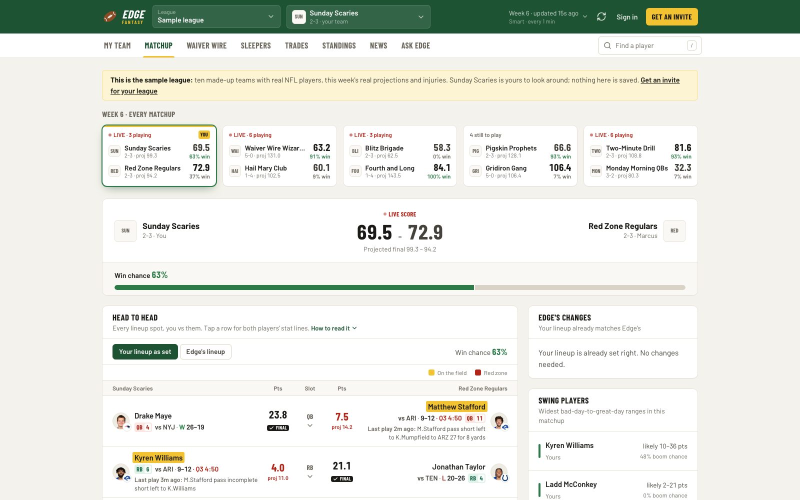
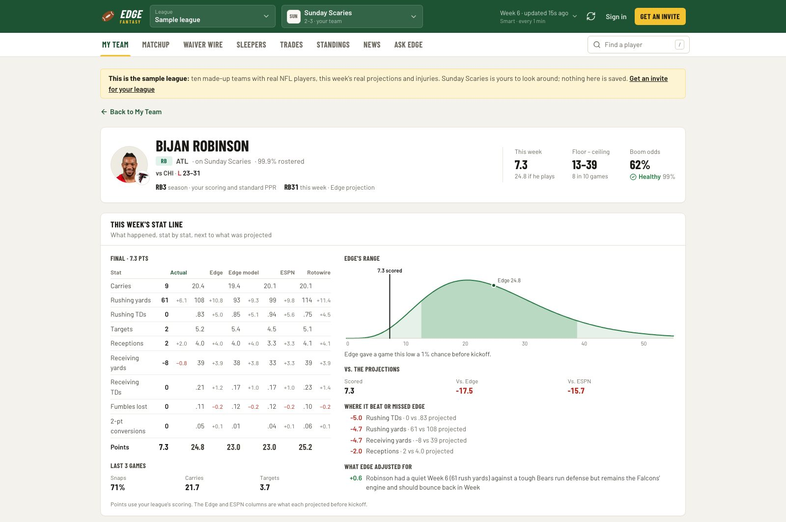
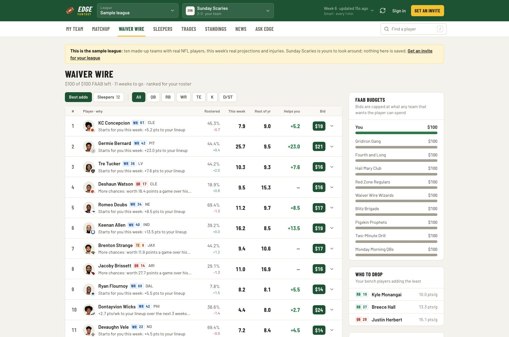

03 / 06
- Context
- Personal, solo
- Role
- Everything
- Status
- Live, invite-only
- 5.92
- held-out RMSE, 6.39 baseline
- 10.3%
- p90 coverage, 10% ideal
- 52,764
- player-games trained on
Fantasy Edge
Projections with honest error bars, and the decisions they support
A live fantasy football service for ESPN and Sleeper leagues, built on a gradient-boosted projection model validated against a season it never saw, interval estimates that land where they claim to, and a correlated Monte Carlo that turns all of it into which lineup actually wins the week.

What it is
Edge connects to ESPN and Sleeper fantasy leagues and answers the only questions that matter in one: who to start, who to pick up, what to bid, and who to trade for. It is live at edgefantasy.us, invite-only for a group of friends, with a sample league open to anyone.
The interesting part is not the football. It is that every number on the screen is a distribution rather than a point estimate, every distribution was checked against a season the model never saw, and the parts that could not prove they helped were left switched off.
The projection model, and what it is measured against
A LightGBM model over 79 features, trained on 52,764 skill-position games. Four heads: a mean regressor plus p10, p50 and p90 quantile regressors with the quantiles forced into order. Features are strictly backward-looking, and the same function builds training rows and inference rows, so a traded player inherits his new team’s context instead of leaking his old one.
Validation is time-based rather than random. Train through season N minus one, score the whole of season N, then refit. Random splits would let the model see week 12 while predicting week 11 of the same season, which would flatter it badly.
The baseline matters as much as the score. For a fantasy projection the honest thing to beat is a player’s own season average, because that is what you would use if you built nothing. It beats that at every position on RMSE in both tested seasons.
Why RMSE, and why that is not a detail
RMSE weighs big misses more heavily than small ones, and these projections get summed into a lineup total, so one catastrophic miss costs more than several near misses. MAE rewards predicting the median, which flatters a season average at positions whose scoring is driven by touchdowns.
You can see the difference in the numbers. On MAE the 2025 running backs look like a tie, 4.27 against the baseline’s 4.25. On RMSE the same games are 5.97 against 6.30. Picking the metric after seeing both would be the easiest way to lie here, so the reasoning is written down and the losing metric is reported too.
Making a learned improvement prove itself
The projection shown is a blend of ESPN, Rotowire and the model. The obvious move is to learn the mixing weights from which source has been most accurate, and that move is a trap: a mix fitted on past results will always score better on those same results.
So a learned mix only replaces the hand-set default if it beats it on held-out games in at least 80% of 2,000 paired bootstrap resamples. Running backs and receivers cleared that bar. Quarterbacks, tight ends, kickers and defences did not, and still run on the defaults. Kickers came out at 55%, which is a coin flip wearing a number.
Four of six positions rejecting my own improvement is the result I would point at first. It is the part of the system that decides what is allowed to be true.
Uncertainty that was measured, not assumed
A questionable tag is not a coin flip, and guessing what it means would undo the calibration work. So it was measured: every official injury report since 2016 next to the snap counts that followed. A player listed questionable who practised fully on Friday plays 89% of the time. Limited, 76%. Did not practise, 55%. Doubtful, 1%.
It splits further by injury, by position and by role, with small groups shrunk toward their broader group and position applied on the log-odds scale. Questionable quarterbacks play 52% of the time against 74% for receivers and tight ends. A hamstring is 63% where an illness is 77%.
The sharpest finding is about role rather than health. A starting quarterback on the report after a full practice plays 96% of the time; a fill-in quarterback in the same situation, 83%. The fill-in is not less healthy. He loses the job when the starter recovers, and the injury report is just where that shows up. Measuring the right cohort mattered more than any model choice here.

Deciding, rather than ranking
Projections are an input, not an answer. Each player becomes a gamma distribution matched to his blended mean and the model’s quantile spread, multiplied by a weighted coin flip for whether he suits up at all.
The matchup is then played out 12,000 times with the players correlated through a Gaussian copula: teammates share a team factor so a quarterback and his receiver rise together, both sides of a game share a game factor for shootouts, and a defence moves against the offence it is facing. Treating players as independent would understate the variance badly, which is exactly the error that makes a confident-looking lineup wrong.
The lineup is then chosen by win probability rather than projected points, solved at six risk settings from floor-leaning to ceiling-leaning, with slots assigned exactly by the Hungarian algorithm under each league’s own rules. Underdogs get handed ceiling, favourites get floor. It only abandons the highest-points lineup when the gain is worth at least 0.4 percentage points of win probability, because churn with no edge is still churn.
The opponent is simulated with the lineup they have actually set, not the perfect one. Assuming every rival plays optimally would make you look like a bigger underdog than you are, and would quietly push every recommendation toward desperation.

The decision that made the whole thing worth building
A star listed questionable usually gets benched out of fear. That is normally wrong. If his backup is still swappable once the inactive list drops ninety minutes before kickoff, keeping him in is worth p times the starter plus one minus p times the backup, which beats benching him whenever he is the better player when he plays.
So Edge builds the lineup valuing him as if he plays, works out the exact swaps to make if he sits (including chains, like moving a receiver to FLEX to free a slot), and scores that plan inside the simulation by applying each swap only in the runs where that player did not suit up. Then it sorts every change into do it now, wait for the game-time call, or decide now because the backup’s game starts first and waiting is not an option.
It is a small idea that only works if the play probability is honest and the simulation is correlated. Both pieces had to exist first.
Shipping it to other people
Running this for yourself is one thing. Running it for friends means invite-only sign-in through Clerk, a membership per person per league, daily caps on the Claude-backed features, spend tracked per day and per feature and per person, and an admin page for people, jobs and server health.
It also means holding other people’s credentials. ESPN private leagues need the user’s own session cookies, so those are encrypted at rest rather than stored as handed over. The API accepts only its own origin, and the Docker build context excludes the data directory and the environment file outright, so neither can reach the builder.
The engine runs on Fly.io and the site on Vercel. The machine sizing is written down with its reasoning: five leagues on 1 GB left about 180 MB spare, which meant Tuesday’s retraining would have run on swap, so it runs on 2 GB with swap as the backstop instead.
Honest limits
The calibration was measured on the 2025 and 2026 seasons. Those are two seasons, not twenty, and a year with an unusual injury pattern could move it.
Nothing here predicts injuries before they happen or calls every breakout. The advantage is narrower than that: reading practice reports and line moves as they land, using role signals that move before box scores do, carrying uncertainty instead of collapsing it, and knowing what every rival in your league needs and can spend.
ESPN has no public API, so league data comes from unofficial endpoints and the news from ordinary public pages, cached and rate-limited per host. That is reasonable for personal use and it is the reason this is invite-only rather than a product. Turning it into one would mean licensed feeds.
Stack Python and FastAPI · LightGBM, NumPy and SciPy · Gaussian copula simulation · Hungarian assignment · Next.js 16, React 19 and Tailwind 4 · Postgres and SQLite · Clerk for invite-only sign-in · Claude for news extraction and game plans · Fly.io and Vercel
Live demo Source The demo league is open to anyone and runs on the current week’s real projections.